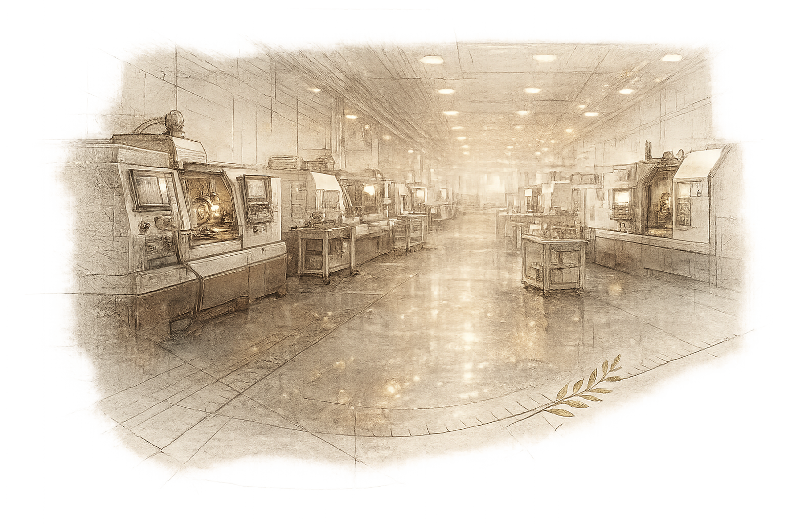
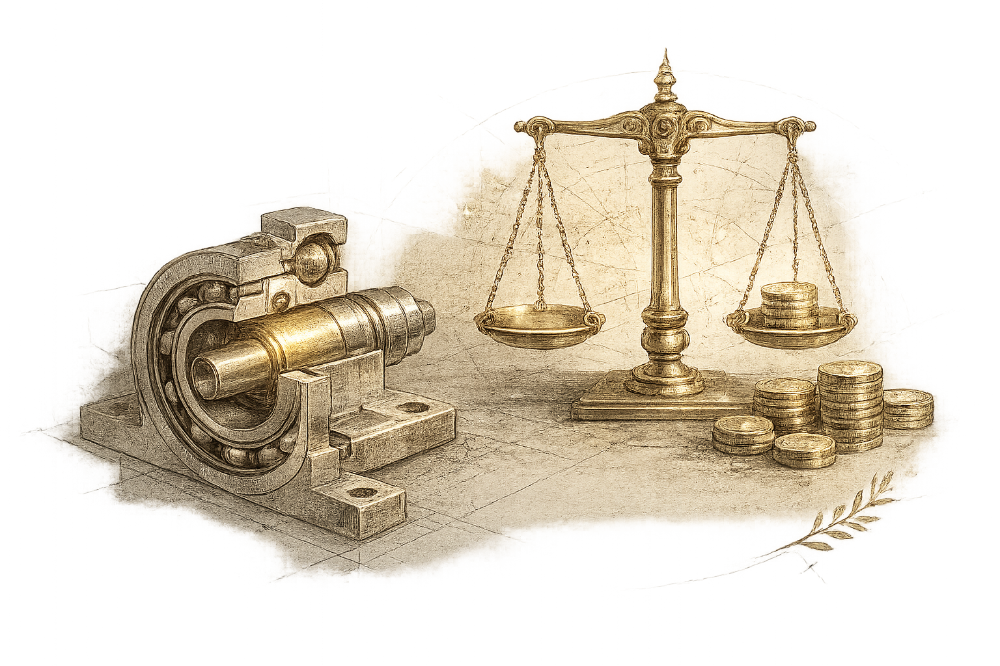

Un'unica offerta,
quattro ambiti
Trasformazione aziendale in Qualità & EHS, Design & Ingegneria, Produzione & Operations, e Miglioramento dei Costi — perché nelle aziende industriali questi raramente sono problemi separati. Lavoriamo su tutti e quattro, o ci concentriamo dove la leva è maggiore.
Dalla strategia al reparto produttivo —
una sola disciplina, non binari paralleli
Qualità ed EHS condividono la stessa logica operativa: identificare i rischi prima che si concretizzino, integrare controlli nei processi, misurare le performance e migliorare continuamente. Le trattiamo come una disciplina unificata — con la profondità per lavorare su ciascuna indipendentemente e l'esperienza per integrarle dove crea valore reale.
Strategia & Gap Analysis
Una Strategia di Qualità e Sostenibilità co-sviluppata con il management senior, una Gap & SWOT analysis a livello aziendale, e uno Step-Up Plan chiaro. In caso di crisi, progettiamo e guidiamo Crash Plan ad alta intensità.
Sostenibilità & Decarbonizzazione
Strategie ESG collegate agli obiettivi aziendali, con roadmap Net Zero pratiche su emissioni Scope 1, 2 e Scope 3 rilevanti, allineate ai requisiti SBTi.
Sistemi di Gestione & Certificazione
Progettiamo, costruiamo e certifichiamo sistemi robusti — ISO 9001, IATF 16949, AS9100, IRIS, ISO 14001, 45001 e 50001 — per singoli siti e schemi multi-sito complessi.
Audit & Valutazioni
Portfolio di audit risk-based su qualità, EHS, energia e sostenibilità, oltre a Hidden Factor Assessment che guardano oltre la documentazione, ai comportamenti di leadership e alla cultura.
Gestione dei Processi Aziendali
APQP, Management of Change, PPAP/ISIR/FAI, gestione dei reclami cliente, approvazione fornitori e gestione del rischio — definiti, implementati e presidiati.
Reporting ESG & Digitalizzazione
Processi dati ESG e qualità pronti per l'audit, supporto CSRD/ESRS, e Roadmap di Digitalizzazione che aprono la strada a qualità ed EHS proattivi guidati dall'IA.
Sviluppo prodotto &
eccellenza tecnica
Un approccio orientato alla prevenzione nella progettazione di prodotto e processo. Con metodologie Design for Six Sigma — in particolare la roadmap IDDOV — aiutiamo i team di ingegneria a costruire prestazioni e qualità nel prodotto prima che la produzione inizi.
Design for Six Sigma & Affidabilità
Robust Design, tolleranze statistiche, simulazione Monte Carlo, FMEA di progetto e di processo, ingegneria dell'affidabilità e Design for Environmental Performance — intercettando i problemi prima che diventino reclami in garanzia.
Analisi Garanzie & Risoluzione Problemi sul Campo
Analisi di Weibull, analisi non parametriche e modelli di regressione per prevedere i tassi di reso, caratterizzare i meccanismi di guasto e circoscrivere la popolazione del problema — poi workshop strutturati per risolvere le cause radice.
Innovation Event
Workshop facilitati con TRIZ, Design Thinking e Lean Experimentation per generare, prioritizzare e validare soluzioni dirompenti — con risultati misurabili e un percorso chiaro verso l'implementazione.
Strategia di Proprietà Intellettuale
Supporto IP end-to-end, dalle ricerche di anteriorità e valutazioni di brevettabilità alla stesura tecnica e alle strategie di protezione internazionale — fondato su una reale profondità in ingegneria meccanica.
Eccellenza operativa —
Lean, Zero Difetti, Procurement
Programmi su scala aziendale per eliminare gli sprechi, ridurre la variazione e costruire supply chain resilienti ed efficienti nei costi — strutturati per scalare da un singolo sito a un rollout globale multi-stabilimento.

Programmi Lean & Zero Difetti
Iniziative Zero Difetti integrate dal rilascio del progetto alla consegna finale. Sistemi di produzione Lean con visual management, kaizen ed eliminazione degli sprechi. Problem solving DMAIC per problemi cronici, con efficienza energetica e delle risorse integrata nello stesso framework.
Procurement Avanzato & Supply Chain
Dal sourcing strategico allo sviluppo fornitori e alla gestione delle performance. Valutazione del rischio RFQ, analisi del costo totale di possesso, e requisiti di qualità/EHS/sostenibilità integrati nel procurement — con particolare profondità in automotive e macchinari industriali.
Un motore trasversale per il
costo prodotto
Il miglioramento dei costi non è un sottoprodotto del lavoro sulla qualità — è una disciplina a sé stante, che Qualamantis può attivare indipendentemente da qualsiasi trasformazione della qualità. Il Cost Improvement Program (CIP) è un modulo autonomo e trasversale che copre design, produzione, procurement e qualità.

Un programma strutturato per trovare e catturare costo — nel design di prodotto, nell'efficienza di processo, nelle perdite di qualità e nella supply chain — prima che diventi permanente. Può essere attivato da una specifica pressione sui costi, come parte di una trasformazione più ampia, o come iniziativa autonoma.
Il Costo della Non-Qualità mappa i costi di guasto interno, guasto esterno, valutazione e prevenzione — trasformando problemi di qualità astratti in un business case. Il CoNQ non è il trigger del CIP; è uno dei suoi strumenti diagnostici.
Come si svolge un incarico CIP
Scopri le tre leve di costo e i risparmi tipici ne Il Programma →
Costruire la capacità
che sostiene la trasformazione
La trasformazione si blocca senza competenze. I nostri programmi di formazione sono progettati non come corsi isolati ma come leve per il cambiamento organizzativo — mirati ai gap di competenza che bloccano le performance. Iniziamo con una valutazione delle competenze, poi adattiamo contenuti, formato e ritmo ai gap riscontrati.

Qualità, EHS & Sostenibilità
Sistemi di gestione QMS ed EHS (ISO 9001, IATF, VDA, ISO 14001/45001/50001), tecniche di audit, processi critical-to-quality, FMEA, problem solving (A3, 8D), MSA/SPC e reporting CSRD/ESRS.
Six Sigma & Design for Six Sigma
DMAIC Green Belt e Black Belt, DFSS Green Belt e Black Belt, Lean Six Sigma, Robust Design, tolleranze statistiche, simulazione Monte Carlo e ingegneria dell'affidabilità.
Leadership & Executive Coaching
Coaching dedicato per Chief Quality, Technical, Purchasing e Sustainability Officer, oltre a programmi culturali più ampi per costruire ownership e disciplina operativa a ogni livello.
Erogata in presenza, in modalità blended (trainer da remoto + e-learning), o come moduli e-learning puri — a seconda del numero di partecipanti, della profondità dell'argomento e delle preferenze organizzative.

Scopri la metodologia
dietro questi quattro ambiti
Il Programma mostra come una Gap Assessment, un Piano d'Azione e un Cost Improvement Program trasformano questa offerta in un percorso sequenziato — con responsabili chiari e KPI.